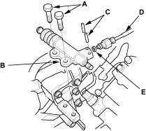
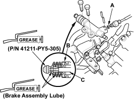
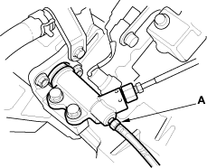

NOTE: Do not spill brake fluid on the vehicle; it may damage the paint; if brake fluid does contact the paint, wash it off immediately water.
- Remove the mounting bolts (A) and the slave cylinder (B).

- Remove the roll pins (C). Disconnect the clutch line (D),and remove the O-ring (E). Plug the end of the clutch line with a shop towel to prevent brake fluid coming out.
- Install the slave cylinder in the reverse order of removal. Install the new O-ring (A).

- Pull the boot (B) back and apply grease to the boot and slave cylinder rod (C). Reinstall the boot.
- Apply Urea Grease UM264 (P/N 41211-PY5-305) to the tip of the push rod of the slave cylinder. Tighten the slave cylinder mounting bolts to 22 Nm (2.2 kgf/m, 1.6 lbf/ft).
- Bleed the clutch hydraulic system.
NOTE: Be careful not to damage the slave cylinder by overtightning the bleeder screw.
- Attach a hose to the bleeder screw (A) and suspended the hose in a container of brake fluid.
- Make sure there is an adequate supply of fluid at the clutch master cylinder, then slowly pump the clutch pedal until no more bubbles appear at the bleeder hose.
- Refill the clutch master cylinder with fluid when done.
- Always use only Genuine Honda DOT 3 or 4 brake fluid.
